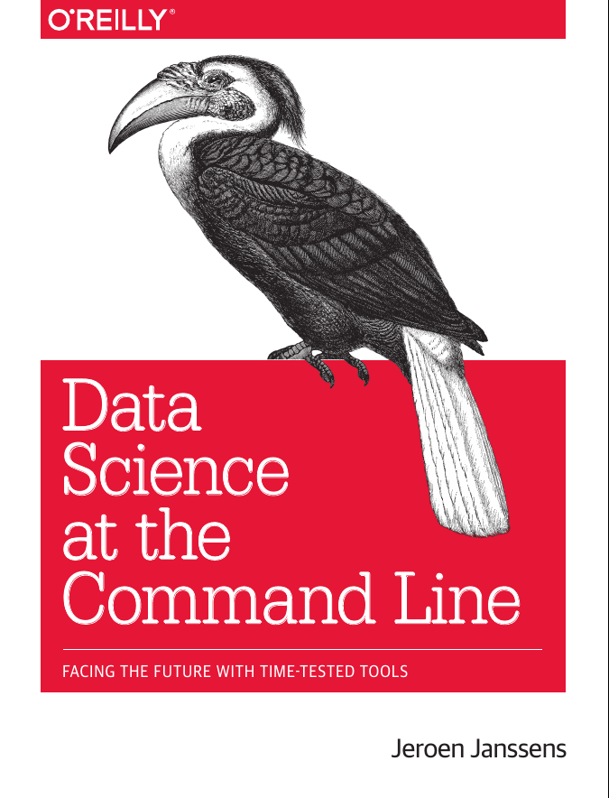
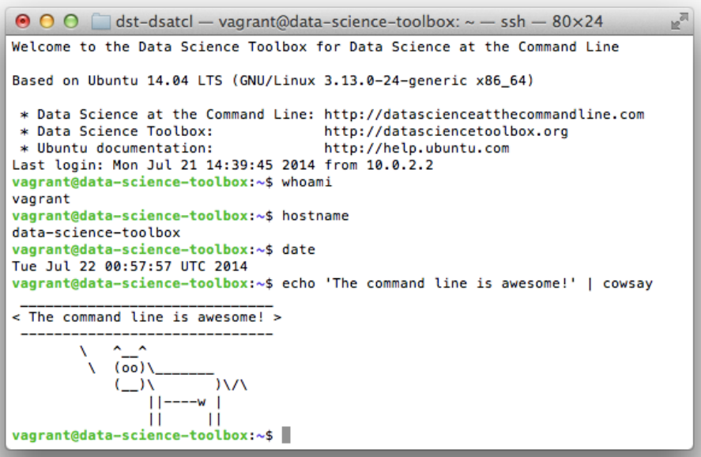
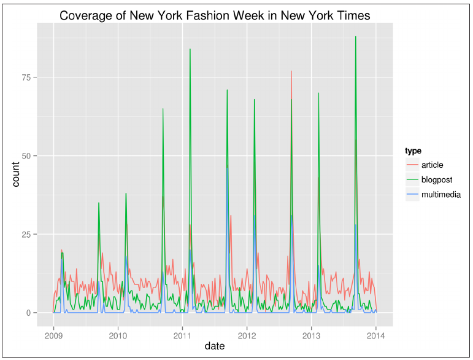

 ## ITEC 4220 - Advanced Data Analytics ### Module 2 - Obtaining and scrubbing data #### Cengiz Gunay, Spring 2020 #### Reading: Ch 1 & 2 from [Book's website](https://www.datascienceatthecommandline.com/), [Safari Books/O'Reilly](https://learning.oreilly.com/library/view/data-science-at/9781491947845/) <br/> or [free source](https://github.com/jeroenjanssens/data-science-at-the-command-line)
### Data Science is OSEMN: Anatomy of a project 1. Start with a question or hypothesis that is testable with existing data 2. (O)btain data and (S)crub it for relevant parts 1. (E)xplore data to understand what can be done 3. Convert question into statistical (M)odel 4. Select and use a technique to optimize or test model with data 5. i(N)terpret results: visualize, summarize, make a recommendation 1. Go back to 1 and revisit/modify/repeat
### Obtaining data - Download - Query database - Extract from sources (e.g., HTML crawl/parse) - Generate yourself (reading sensors)
### Scrubbing data Prepping for analysis - Filtering lines - Extracting only some columns - Replacing values - Extracting words - Handling missing values - Converting data formats
### Exploring data To understand nature of data and what can be done with it - Browse and look at data - Derive statistics - Visualize
### Modeling data To predict from data - Example 1: testing whether global warming exists; check for correlation between time and temperature - Example 2: if person A buys book X, would person B also buy it?
### Interpret data - Draw conclusions - Evaluate meaning of results - Communicate results
### What is the command line? - Endless text flow  - Allows streaming operations - More flexible than UI - Many tools are already included - Multiple ways to install/access
### Why command line? - Use it in addition to UI - Scalable - Extensible: 40 years running - Ubiquitous: 95% of top 500 supercomputers
### An example Finding out when is the next Fashion Week using New York Times web API: ```bash $ cd ~/book/ch01/data $ parallel -j1 --progress --delay 0.1 --results results "curl -sL "\ > "'http://api.nytimes.com/svc/search/v2/articlesearch.json?q=New+York+'"\ > "'Fashion+Week&begin_date={1}0101&end_date={1}1231&page={2}&api-key='"\ > "'<your-api-key>'" ::: {2009..2013} ::: {0..99} > /dev/null Computers / CPU cores / Max jobs to run 1:local / 4 / 1 Computer:jobs running/jobs completed/%of started jobs/Average seconds to complete local:1/9/100%/0.4s ``` Ran 500 parallel queries to receive 1000 articles in JSON format.
### Parsing <div><img src="images/DS_cmdline_tree_results.png" style="float: right; height: 200px; margin-right: 200px; margin-bottom: 50px;"/> Looking at the output <br>directories under `results`: </div> <p style="clear: both;">Combine and process:</p> ```bash $ cat results/1/*/2/*/stdout | > jq -c '.response.docs[] | {date: .pub_date, type: .document_type, '\ > 'title: .headline.main }' | json2csv -p -k date,type,title > fashion.csv ``` 1. `cat`: Outputs contents of files 1. `jq`: Parses JSON content 1. `json2csv`: Converts to CSV
### Exploring Count number of rows in result: ```bash $ wc -l fashion.csv 4856 fashion.csv ``` Select and browse some columns: ```bash $ < fashion.csv cols -c date cut -dT -f1 | head | csvlook |------------+------------+-----------------------------------------| | date | type | title | |------------+------------+-----------------------------------------| | 2009-02-15 | multimedia | Michael Kors | | 2009-02-20 | multimedia | Recap: Fall Fashion Week, New York | | 2009-09-17 | multimedia | UrbanEye: Backstage at Marc Jacobs | | 2009-02-16 | multimedia | Bill Cunningham on N.Y. Fashion Week | | 2009-02-12 | multimedia | Alexander Wang | | 2009-09-17 | multimedia | Fashion Week Spring 2010 | | 2009-09-11 | multimedia | Of Color | Diversity Beyond the Runway | | 2009-09-14 | multimedia | A Designer Reinvents Himself | | 2009-09-12 | multimedia | On the Street | Catwalk | |-------------+------------+-----------------------------------------| ```
### Plotting Create a plot using R, Rio, and ggplot2 ```bash $ < fashion.csv Rio -ge 'g + geom_freqpoly(aes(as.Date(date), color=type), '\ > 'binwidth=7) + scale_x_date() + labs(x="date", title="Coverage of New York'\ > ' Fashion Week in New York Times")' | display ``` 
### How to get started and learn more? Two resources: 1. [Conquering the command line](http://conqueringthecommandline.com/) by Mark Bates<br> (free online book for starters) 1. Course textbook Data Science at the Command Line <br> (see D2L for an extract and [Safari Books/O'Reilly](https://learning.oreilly.com/library/view/data-science-at/9781491947845/))
### How to practice? 1. On your local machine, you can do one of these: - install Git Bash that comes with Git for only simple commands - install the book's Docker image from [Chapter 2](https://www.datascienceatthecommandline.com/chapter-2-getting-started.html) - download a Linux virtual machine ([datascience-school.com](https://vm.datascience-school.com/)) 1. On the cloud, you can do: - Use my server on JetStream - Open your own free virtual machine on Google Cloud Platform (GCP), Azure, or Amazon Web Services (AWS)